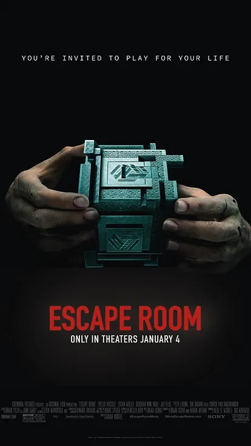
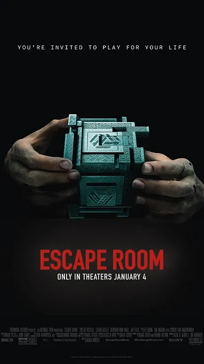

BRIAN TYLER
BIO
Born : May 8, 1972
Nationality : United States
Education : University of California, Lose Angeles & Harvard University
Occupation : Composer, Songwriter, Multi-instrumentalist, Conductor, Arranger, DJ, Producer
Genres : Film score, Classical, Rock, Electronic, EDM, Jazz
Website : briantyler.com
ABOUT
Brian Tyler is a multiple BAFTA and Emmy Award nominee and a platinum-selling recording artist. He has an extensive background as a composer & conductor, contributing to over 100 feature films.
His grandfather, the renowned art director Walter H. Tyler, earned nine Academy Award nominations, ultimately winning the prestigious award in 1951 for his work on Cecil B. DeMille's "Samson and Delilah" (1949). A pivotal influence in Brian's life was his grandmother, a skilled pianist.
Tyler possesses remarkable versatility as a multi-instrumentalist, proficient in playing instruments such as the piano, guitar, drums, bass, cello, world percussion, guitarviol, charango, bouzouki, and more. During his upbringing, he took it upon himself to master dozens of musical instruments. Following his graduation from Harvard, Tyler embarked on his journey in scoring features. Robert Kraft, deeply impressed by Tyler's musical talents, urged him to pursue a career in film scoring.
Brian Tyler's extensive list of accolades includes 34 BMI Music Awards, three Emmy nominations, five ASCAP Music Awards, and 12 Goldspirit Awards, with the distinguished title of Composer of the Year among them. In 2014, Tyler was honored with the title of Film Composer of the Year at the Cue Awards.
MOVIES


 
